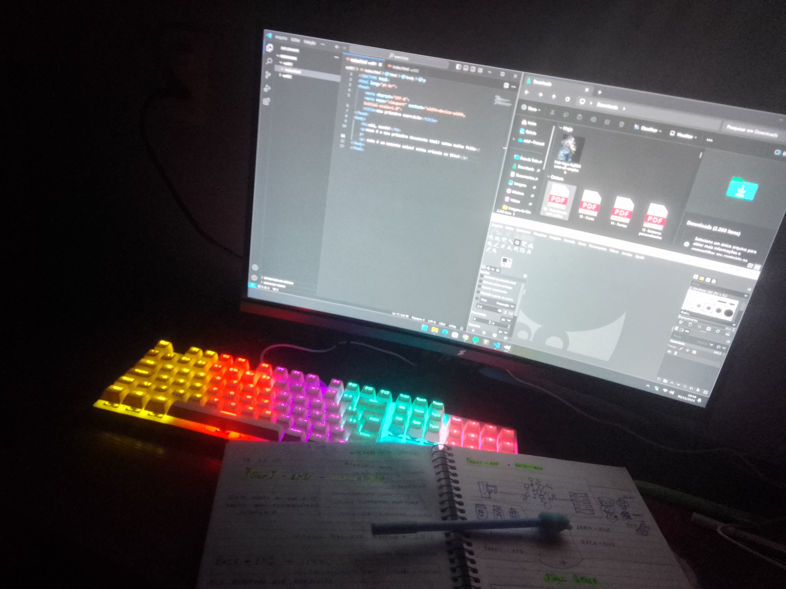
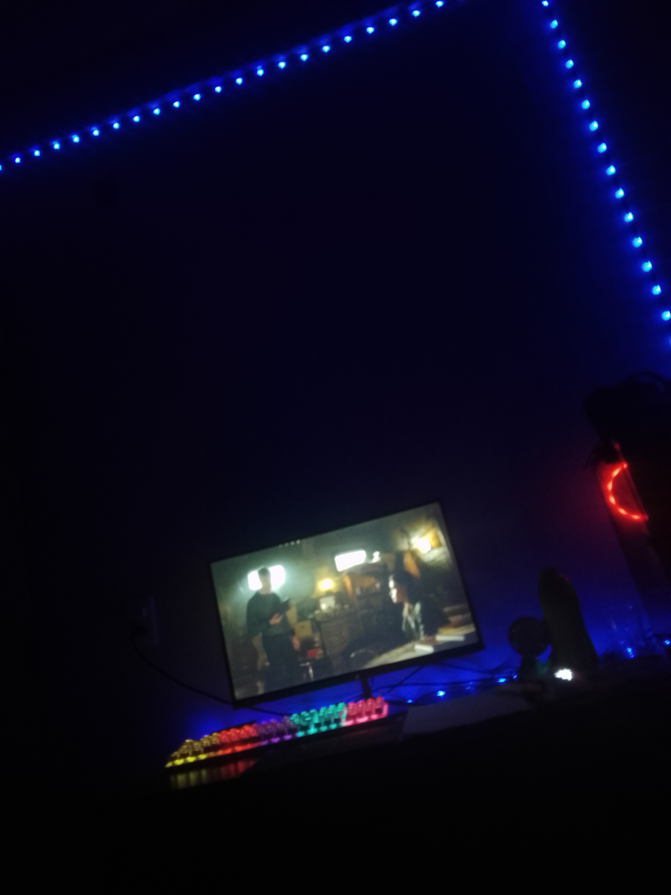
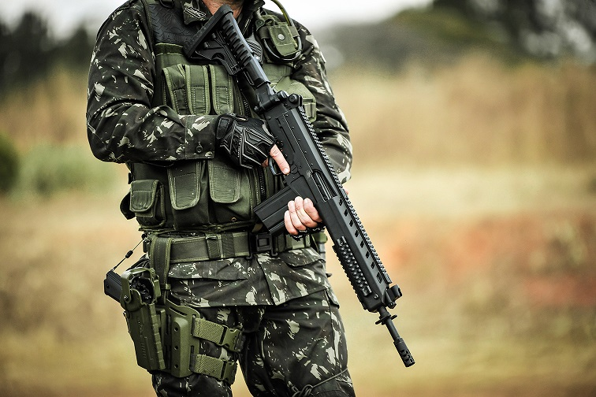

Programação ainda vale a pena? Dá dinheiro? Profissionais contam como está o setor (e dão dicas)Área da TI permanece aquecida e há vagas disponíveis, mas os salários altos que sempre chamaram a atenção podem ser impactados pela economia enfraquecida; g1 traz guia completo para quem deseja entrar no mundo dos códigos. acesse g1.com/tecnologia/

e-sports no brasil
Os números do e-sports no Brasil comprovam a popularidade da categoria: três a cada quatro brasileiros jogam games – o equivalente a 74,5% da população.
Esses dados são da Pesquisa Game Brasil, uma parceria entre Sioux Group, Go Gamers, Blend New Research e ESPM, que revela o potencial do mercado de jogos eletrônicos.A popularização não se restringe ao Brasil, ultrapassando fronteiras e ganhando espaço como fonte de renda para jogadores ao redor do mundo.Com torneios oficiais, equipes treinadas e um público fiel, o conceito tem se expandido e é um dos principais mercados em crescimento nos últimos anos.Entenda o conceito e saiba como funcionam as competições de esportes eletrônicos ao redor do mundo.

criação do Discord
O Discord é uma ferramenta de comunicação gratuita que oferece a possibilidade de troca de mensagens em texto, áudio e vídeo, e facilita a organização da comunicação por assuntos e grupos de discussão, criando espécies de comunidades dentro do aplicativo, um ponto importante é que ele não faz os celulares dos integrantes tocarem, pois envia somente uma notificação avisando que a conversa está em andamento.
armamento bélico do exercito brasileiro
O IA2 é um fuzil de fogo seletivo, que, dependendo da versão, pode ter mecanismos diferentes: Fuzil 5,56 e outras variantes em 5,56x45 mm NATO: Sistema de ferrolho rotativo, com sete ressaltos; Fuzil 7,62 (7,62x51 mm NATO): Sistema de ferrolho basculante, similar ao utilizado no FAL.

veja um video explicando detalhes sobre o armamento